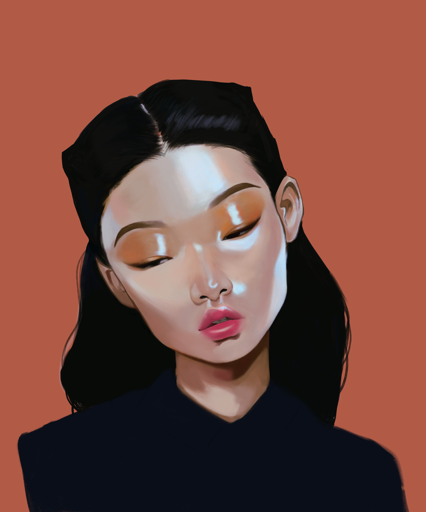
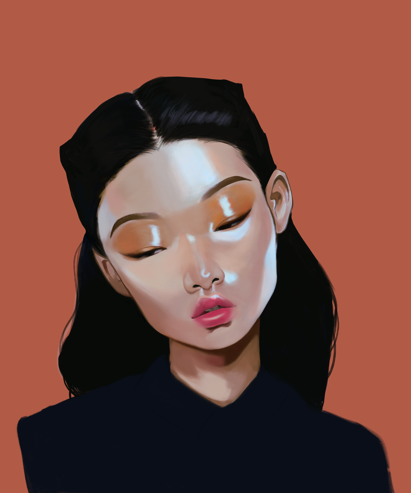

Illustrations


 

I created many of these pieces in High School. I do intend at some point to update the portfolio pieces with more recent work, though I have been very busy with school work these days. I wanted to talk about the pieces I've done by section briefly.
The first section I wanted to showcase was my original illustrations work, every single piece has been drawn and sketched by hand. If you're a fan of Genshin you'll see that most of my inspiration stems from the game ! I started playing Genshin around 2020 when quarantine hit and it was a huge comfort game for me and I was especially inspired by all the beautiful designs that the game had offered. I also drew some other characters mostly from friend's original characters or some other designs that inspired me outside of Genshin.
Next I wanted to showcase my graphic design work since I am interested in the field as a career. In my graphic design portfolio I have a mix of photos and illustrations combined. For the most part I had edited and combined photos I found online together with hand drawn elements. Through these works I had also become proficient in using Adobe products. Most of these graphics were inspired by poster designs.
For simple illustrations, these art pieces were supposed to be used for any merchandise use or for simple logo work. In contrast to illustrations, I wanted these pieces to be as simple as possible since I found that a more minimal design meant that information wasn't as easily lost when scaled down. I think that these principles are especially important for logos when the business or individual wants to be able to print and display them across a variety of product sizes.
Lastly, I included art studies that I've done since it shows my growth and understanding of elements drawn from real life. This was also inspired by a portfolio review I had done in high school. The reviewer had pointed out that in order to garner the best outcome for drawing that I should do more still life studies. As a result, I did a lot of studies featuring a mix of my own photos and photos I had found on pinterest.